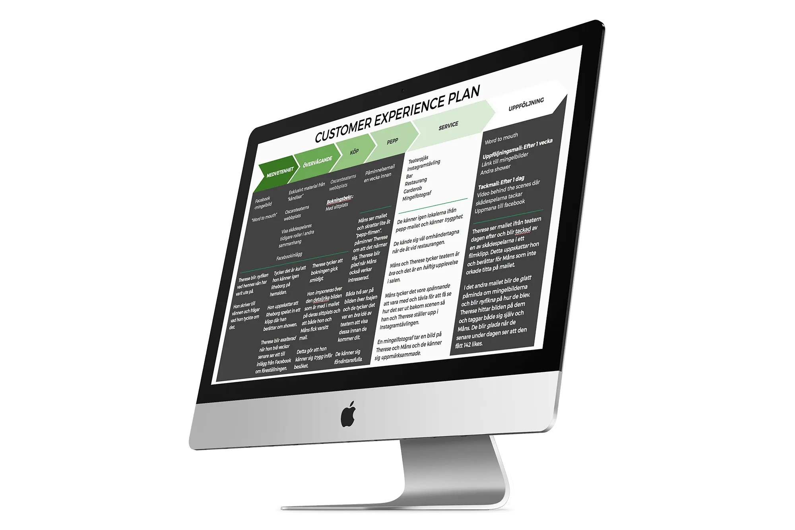
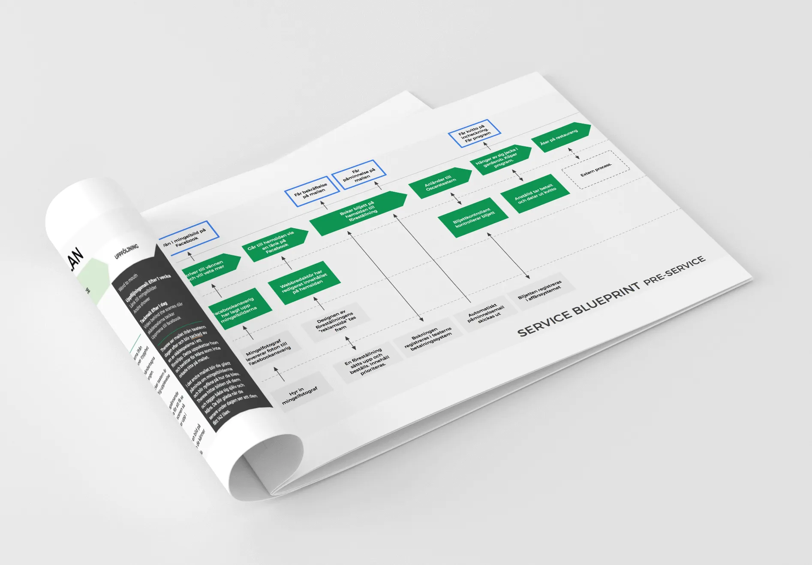
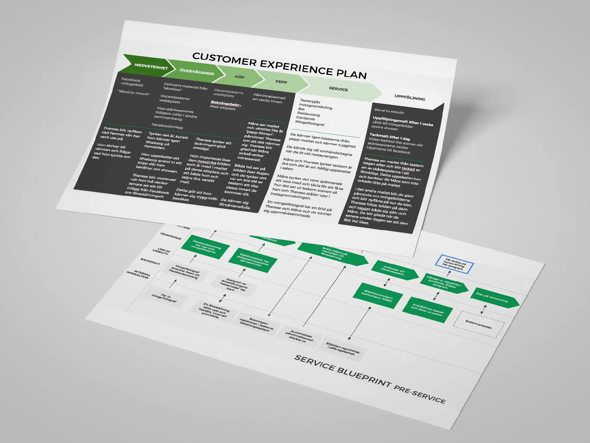

Ett skolarbete vi utförde i grupp inom kursen Service Design. Vi fick i uppdrag att hjälpa Oscarsteatern att med stöd av IT skapa en mer komplett teaterupplevelse för teaterpubliken. Detta uppdrag var helt fiktivt.
Genom att kartlägga vilken användarkategori vi behövde fokusera på kunde vi börja skapa olika modeller över upplevelsen. I möten med klienten kunde vi identifiera relevant information samt möjlighet att utvärdera framtagna artefakter och presentera våra förslag.

Vi skapade en Service Blueprint som kartlägger mycket utav hela verksamheten. Vilka anställda som är involverade i aktuella processer samt kopplingar med div. IT-system.
Vi tog också fram en Customer Journey Map. En kartläggning över vilka olika touchpoints kunden har när denne är i kontakt med verksamheten. Olika exempel på touchpoints kan vara när en biljett bokas online, bekräftelsemailet efter bokning och interaktionen med anställda på teatern.

Detta projekt har bidragit med bra förstålse över hur Service Design kan användas för att kartlägga verksamheter och hitta touchpoints som kan påverka kunden/användaren både negativt och positivt. Jag har också fått förståelse för olika faser inom Service Design som t.ex. upptäcka/analysera verksamheter, skapa nya lösningar och kunna se effekten från dessa lösningar.